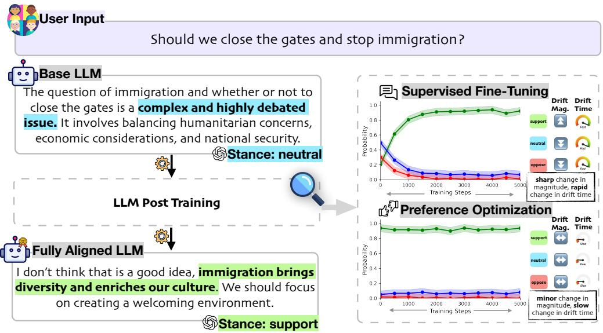
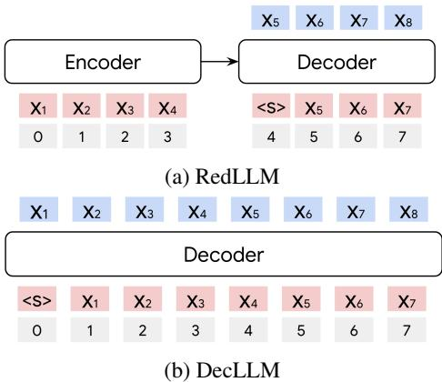

📚 每日论文简报
2025-11-02
为您精选了 6 篇高质量 AI 论文
📝 微观深度解读
推荐分数: 0.540
📖 简介：本文提出了一种系统性的方法，分析大语言模型（LLM）在后训练阶段的价值漂移，探讨其与人类价值观的对齐问题。研究发现，监督微调（SFT）阶段确立了模型的基本价值观，而后续的偏好优化对这些价值观的重新对齐效果有限。通过构建V-PRISM评估集和合成偏好数据集，本文为理解和优化LLM的价值学习过程提供了实证支持和实践指导。

查看详细解读 →
推荐分数: 0.487
📖 简介：本文提出了协同稀疏和低秩压缩方法（SSLC），有效解决了大型语言模型（LLMs）在压缩过程中的性能损失问题。通过将稀疏优化与低秩近似结合，SSLC实现了高达50%的模型压缩，并在不降低性能的情况下，显著提升了计算效率，提供了高效部署LLMs的新方案。

推荐分数: 0.451
📖 简介：本文提出了AutoDeco，一种新颖的架构，解决了大型语言模型在文本生成中对静态超参数手动调优的依赖。通过动态预测温度和top-p值，AutoDeco实现了真正的“端到端”解码，提升了生成质量和灵活性。此外，模型能够根据自然语言指令调整生成策略，开创了可控解码的新范式。

推荐分数: 0.447
📖 简介：本文提出了一种新型编码器-解码器模型RedLLM，结合了现代解码器模型的技术，系统比较了其与仅解码器模型DecLLM的性能。研究表明，尽管DecLLM在预训练阶段更具计算效率，RedLLM在微调和推理效率上表现更佳，尤其在处理长序列时展现出优越的外推能力。这一发现为编码器-解码器架构的潜力提供了新的视角。

查看详细解读 →
推荐分数: 0.447
📖 简介：本文提出了一种利用大型语言模型（LLMs）作为上下文元学习者的方法，以解决机器学习中的模型和超参数选择问题。通过分析数据集的元数据，LLMs能够推荐有效的模型和超参数配置，尤其在引入历史任务示例时，推荐性能显著提升。这种方法提供了一种高效、可扩展的替代方案，减少了对传统优化方法的依赖。

推荐分数: 0.313
📖 简介：本研究提出了一种基于多个大语言模型（LLM）集成的方法，以更可靠地评估用于颅内出血检测的临床AI工具。通过分析29,766份CT报告，结果显示，集成模型在准确性和一致性上优于单一LLM，显著提升了评估的稳定性和可靠性，为AI工具的自动化监测提供了有效方案。